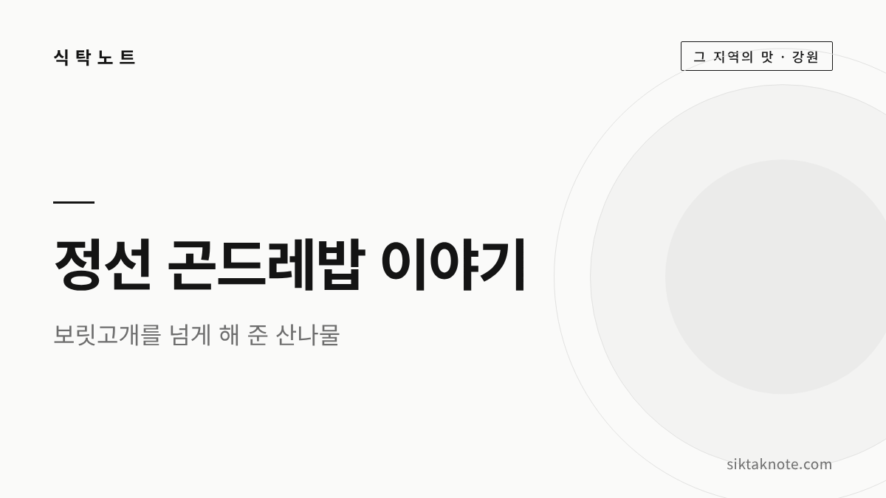
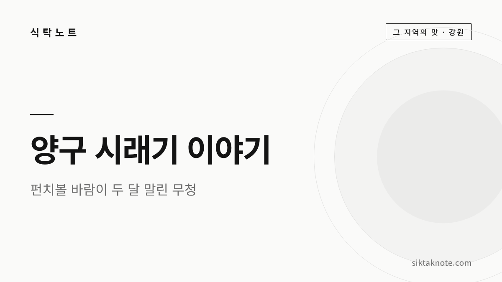
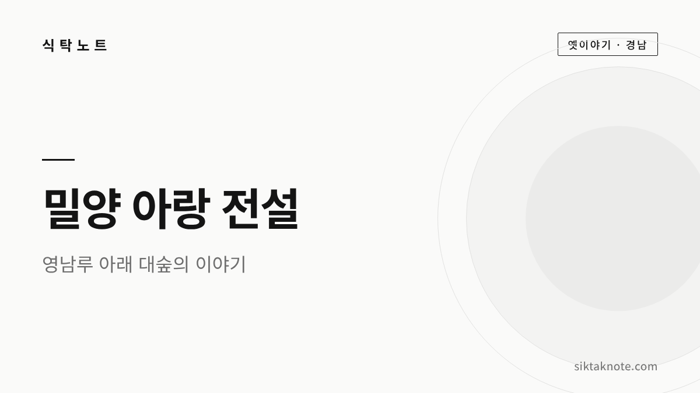
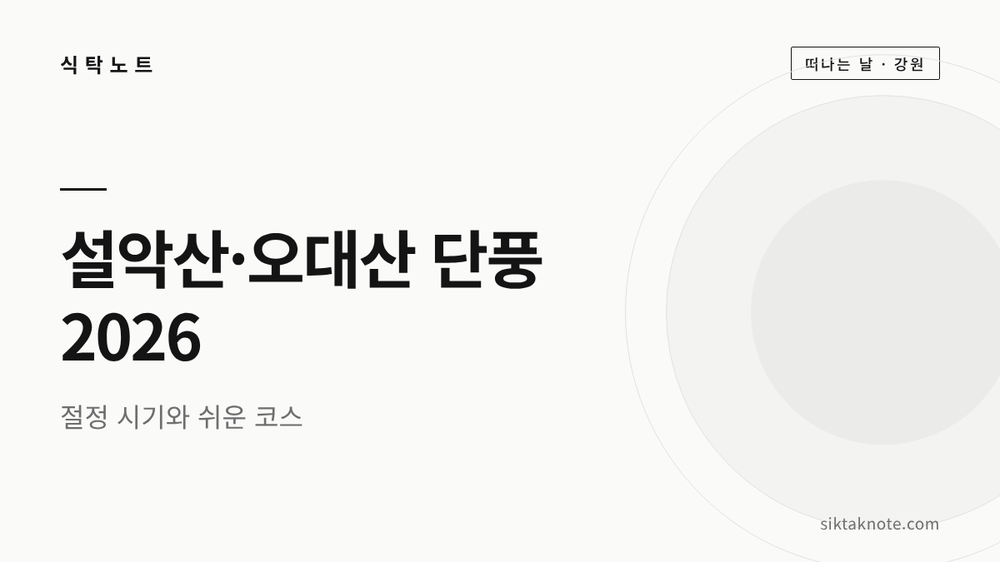
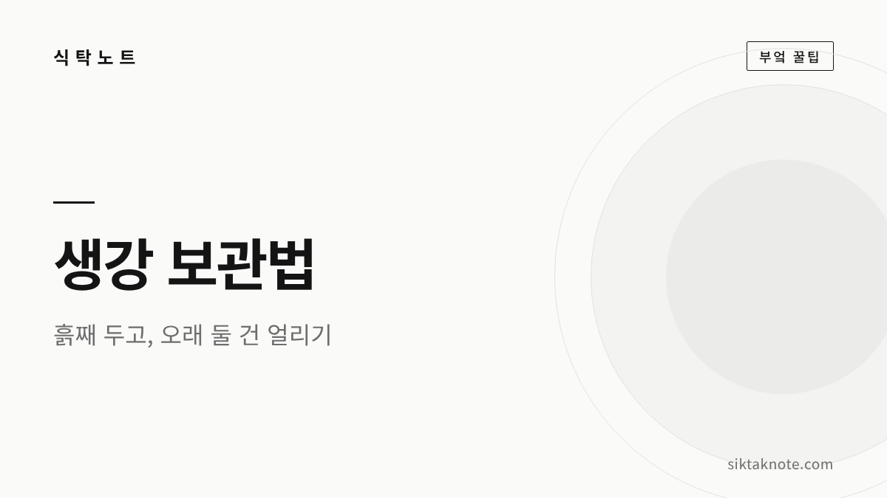
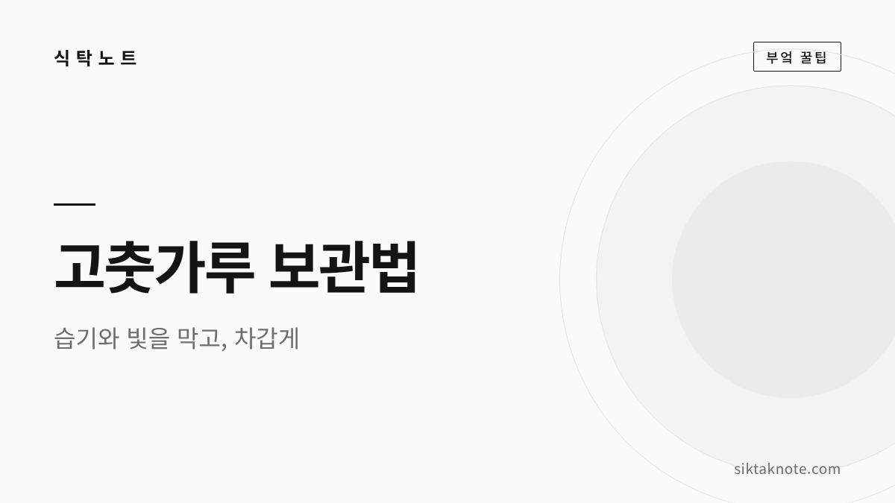
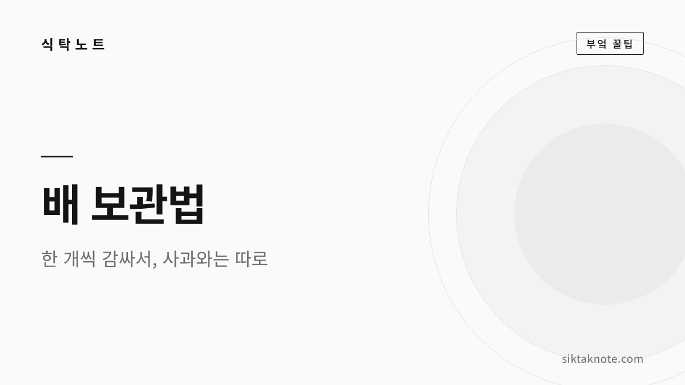
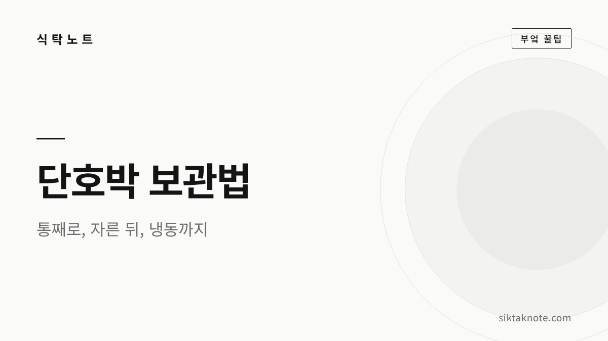

Kitchen · Local · Stories
밥상 위의 작은 궁금증,
같이 풀어봐요
떡이 딱딱해져서 막막했던 순간의 해결법부터, 밥상에서 시작해 우리 지역 곳곳으로 떠나는 축제 소식과 맛 이야기, 옛이야기까지 쉽고 따뜻하게 모았습니다.

- 출처를 확인한 정보
- 바로 따라 하는 방법
- 밥상에서 지역까지

정선 곤드레밥 이야기 — 보릿고개를 넘게 해 준 산나물 한 그릇
곤드레밥은 고려엉겅퀴 나물을 쌀 위에 얹어 지은 정선의 대표 향토 밥입니다. 쌀이 귀했던 산골에서 나물죽으로 보릿고개를 넘던 이야기, 정선아리랑 속 곤드레, 집에서 짓는 법과 양념장, 장날 정선 오일장 정보까지 차근차근 담았어요.

양구 시래기 이야기 — 펀치볼 바람이 두 달 말린 무청
양구 시래기는 해안면 펀치볼 분지에서 길러 찬바람에 두 달 가까이 말린 무청입니다. 왜 그곳 시래기가 이름났는지, 말리는 방식과 집에서 불리고 삶는 법, 시래기 요리와 11월 펀치볼 사과·시래기축제 소식까지 담았어요.

밀양 아랑 전설 — 영남루와 아랑각, 그리고 밀양아리랑 이야기
밀양 영남루에 얽힌 아랑 전설을 옛이야기 들려주듯 풀어 보았는데요. 줄거리와 기록, 영남루 아래 아랑각, 밀양아리랑과의 연결설이 어디까지 통설이고 어디부터 이견인지까지 한국민족문화대백과사전과 관광공사 자료로 확인해 담았습니다.

설악산 오대산 단풍 시기 2026 — 절정 예상일, 초보자 코스, 주차와 붐비는 날 피하는 법
설악산은 올해 9월 28일 첫 단풍이 들었는데요. 산림청과 웨더아이가 내놓은 2026년 절정 예상일, 비선대·흔들바위·선재길 같은 쉬운 코스, 흘림골 탐방 예약제와 주차, 붐비는 주말 피하는 요령을 발표 기관을 밝혀 담았습니다.

원주 만두축제 2026 가이드 — 기간, 장소, 프로그램, 셔틀, 하루 코스
원주 만두축제가 2026년 10월 23일부터 25일까지 열려요. 장소와 프로그램, 셔틀·주차, 원주 만두 이야기, 중앙시장과 강원감영을 잇는 하루 코스를 공식 자료로 확인해 담았습니다.

진주냉면과 진주비빔밥 이야기 — 유등축제 가기 전에 알아둘 두 그릇
진주 남강유등축제를 보러 가는 길에 맛볼 진주냉면과 진주비빔밥 이야기를 들려 드려요. 해물 육수와 메밀·고구마 전분 면, 육회와 선짓국, 유래설이 갈리는 부분까지 쉽게 풀어 봤습니다.
김 보관법 — 눅눅해지지 않게 바삭하게, 냉동 보관과 되살리는 법
김은 습기와 공기를 막아 밀봉한 뒤 냉동실에 두면 오래 바삭합니다. 냉장고보다 냉동실이 나은 이유, 조미김이 쩐내 나는 까닭, 이미 눅눅해진 김을 팬이나 전자레인지로 되살리는 법, 버려야 할 김까지 차근차근 알려 드려요.
감 보관법 — 단감 냉장, 떫은감 홍시 만들기, 홍시 냉동까지
단감은 한 개씩 감싸 냉장고 채소칸이나 김치냉장고에 두고, 떫은감은 실온에서 말랑해질 때까지 익히면 됩니다. 홍시를 오래 두는 냉동법과 사과와 함께 두면 빨리 익는 이유, 곰팡이 핀 감처럼 버려야 할 감까지 차근차근 알려 드려요.

생강 보관법 — 흙생강 보관, 냉장·냉동, 숟가락으로 껍질 벗기기
생강은 흙이 묻은 채 씻지 않고 두다가, 오래 둘 건 손질해서 얼려 두시면 편합니다. 흙생강 보관과 냉장·냉동하는 법, 숟가락으로 껍질 쉽게 벗기는 요령, 김장용 다진 생강 얼리기와 곰팡이 핀 생강 판단법까지 알려 드려요.

고춧가루 보관법 — 냉장·냉동 보관, 소분, 곰팡이·벌레 생겼을 때
고춧가루는 습기와 빛을 막아 밀폐한 뒤 차갑게 두는 게 기본입니다. 농촌진흥청 실험 결과를 바탕으로 냉장·냉동 보관과 소분하는 법, 색이 바래거나 벌레·곰팡이가 생겼을 때 판단하는 법, 김장철 양 조절까지 차근차근 알려 드려요.

배 보관법 — 한 개씩 감싸 냉장, 사과와 따로 두는 이유와 깎은 배 갈변 막기
배는 한 개씩 키친타월로 감싸고 비닐로 한 번 더 싸서, 사과와 떨어뜨려 냉장하시면 오래 갑니다. 사과 옆에 두면 안 되는 이유와 깎은 배 갈변 막는 법, 박스째 받은 배를 오래 두는 요령과 맛있는 배 고르는 법까지 알려 드릴게요.

단호박 보관법 — 통째 실온 후숙, 자른 단호박 냉장·냉동과 쉽게 자르는 법
단호박은 통째로는 바람 잘 통하는 서늘한 그늘에 두고, 칼을 댄 뒤에는 씨를 긁어내 랩을 씌워 냉장하시면 됩니다. 단단한 껍질을 전자레인지로 살짝 데워 덜 위험하게 자르는 법과 냉동 요령, 맛있는 단호박 고르는 법까지 차근차근 알려 드릴게요.